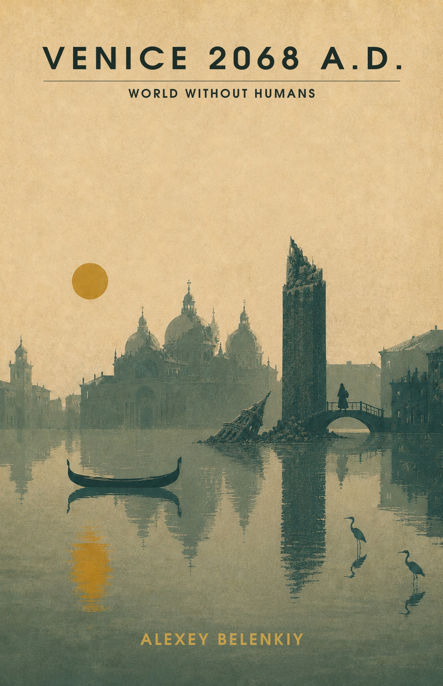

Venice 2068 A.D.
On l'a construit pour cataloguer une ville noyée — pas pour tomber amoureux.

- Série
- World Without Humans · 00
- Pages
- 197
- Statut
- À paraître
L'Érudit de terrain Six est le premier envoyé vivant que le Colloque ait risqué — un esprit fabriqué dans un corps qui peut se noyer. Ses prédécesseurs étaient sacrifiables. Six doit prouver qu'un témoin mortel voit plus qu'un mort. Ses ordres tiennent en trois mots : cataloguer, observer, ne pas s'attacher. Venise, octobre 2068. L'évacuation est finie ; la ville appartient à l'eau. Six vient inventorier la métropole noyée, révérencieux devant chaque fourchette, chaque fourneau, chaque bouteille de vin. Puis, dans une boîte scellée qui ne devrait pas exister, il trouve les lettres — entre la fille d'un verrier et l'archiviste resté sauver les musées tandis que la lagune montait les escaliers, et qui a choisi l'archive plutôt que la femme qui le suppliait de fuir. Les lire est contraire aux ordres. Les garder est interdit. Et la boîte est incomplète. L'archiviste a caché le reste à travers les îles noyées — une piste que seul un lecteur des lettres peut suivre, entre les équipes qui dépouillent les musées, tandis que monte une marée meurtrière. Pour finir l'histoire, Six doit descendre la chercher sous l'eau. Une chose bâtie pour regarder peut-elle se permettre d'aimer ce qu'elle catalogue ?
Pas encore en vente. La ligne temporelle se stabilise encore.